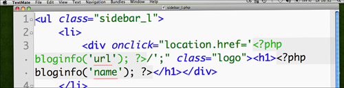

Blogheader auf Startseite verlinken

Was gibt es schöneres, als nach einem Tag im Rechenzentrum nach hause zu kommen und einen hübsch geekigen Beitrag zu verfassen?! Also, Obacht!
Wir ihr links seht, habe ich hier keinen in <h1>-Tags gefassten Blognamen eingebaut, sondern lediglich ein Logo, und zwar aus ästhetischen Gründen. Aus praktischen Gründen möchte ich allerdings, dass dieses Logo auf die Startseite verlinkt. Und zwar valide und ohne ein <img> im Quelltext.
Bevor man jetzt aber anfängt mit a's und div's rum zu dilettieren, greift man lieber auf eine handliche Lösung zurück, die ich bei WordPress Max gefunden habe: Der onClick-Ansatz in Verbindung mit einer Text-Replacement-Technik.
Dafür baut ihr folgendes in euren Header:
<h1 onclick="location.href='http://www.blog-url.tld';">Blog-Name</h1>
Dazu packt ihr folgende CSS-Formatierung in euer Stylesheet:
h1 {
width: 00px;
height: 00px;
text-indent: -9999px;
overflow: hidden
background: #FFF url('logo.png') 0 0 no-repeat;
border: none;
cursor: pointer;
}
Nun habt ihr einen schlanken, validen Quelltext und ein Logo, das auf die Startseite verlinkt. Der in <h1>-Tags gefasste Blogname wird nach links ins Nirwana verschoben und nur die Grafik angezeigt. Suchmaschinen-Bots und Screenreader finden ihn jedoch ohne Probleme. Das einzige, was ihr noch anpassen müsste, sind die Maße eures Logos. Außerdem steht es euch natürlich frei, eine border zu benutzen.
5 Kommentare zu "Blogheader auf Startseite verlinken"
- Externe Links im selben Fenster öffnen
- Externe Links in neuem Fenster öffnen
OnkelToto
Vielen Dank !!! sehr nützlicher Tip
gruss
Onkeltoto
donjermas
hallo!
ich versuche gerade, mein headerimage auf meinem blog als link einzurichten. ich bin auch soweit gekommen, dass der cursor bei mouseover über dem header zum zeigefinger wird. jedoch fungiert das bild nicht als link.
den modifizierten code habe ich auf dem blog in einem beitrag gepostet. adresse habe ich unter "homepage" angegeben.
um einen besuch mit hilfestellung bin ich sehr dankbar!
gruß
donjermas
Herschel Rubinstein
@donjermas: ich habe den beitrag geändert und eine elegantere methode beschrieben. probier die mal aus.
donjermas
hi herschel,
jetzt ist der blogname als schriftzug in einer ebene über dem headerbild. jedoch ist immer noch nicht das bild selbst der linkbutton. ich muss gestehen, ich bin blutiger anfänger und bastel mir das über die technik "probieren geht über studieren" zusammen. solange bis es funktioniert.
das img des headers liegt in einem ordner, welcher in dem ordner der verschiedenen templates liegt. der html code ist auf mehrere templates aufgeteilt. an sich funktioniert der code ja auch, jedoch nicht mit dem img. den code habe ich soweit angepasst, dass er auf das img zurück greifen soll (also die url angegeben). muss ich evtl. noch mehr beachten? sorry, dass ich es nicht so gut erklären kann.
Babsi
hallo
seit wochen bin ich auf der suche nach einer lösung wegen der verlinkung und habe überall nur dasselbe gefunden mit dem code ersetzen usw..bloss...der code den ich im header php hatte war etwas anders. mit DIESER methode nun hat es geklappt und ich bin megahappy
danke!!!!
lg babsi